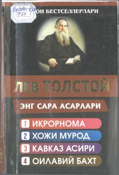

ESLev Tolstoyning eng sara qissa va falsafiy asarlari jamlangan to'plam.
Ushbu to'plam buyuk rus yozuvchisi Lev Tolstoyning eng sara asarlarini, jumladan 'Iqror', 'Hoji Murod', 'Kavkaz asiri' va 'Oilaviy baxt' qissalarini o'z ichiga oladi. Kitob muallifning hayotiy qarashlari, axloqiy izlanishlari va insoniy munosabatlar haqidagi chuqur falsafiy mushohadalarini jamlagan.